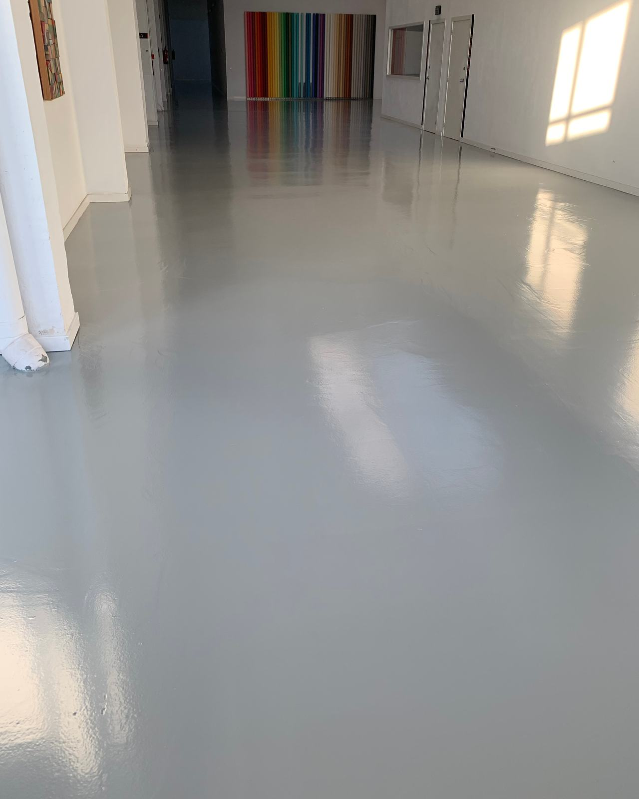
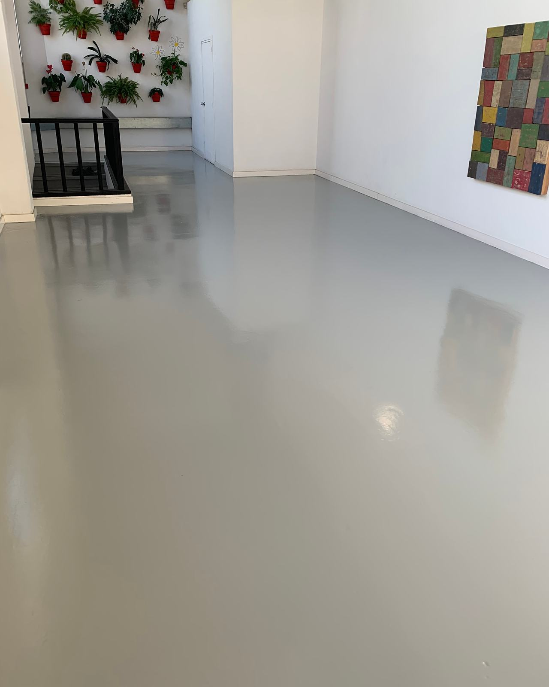
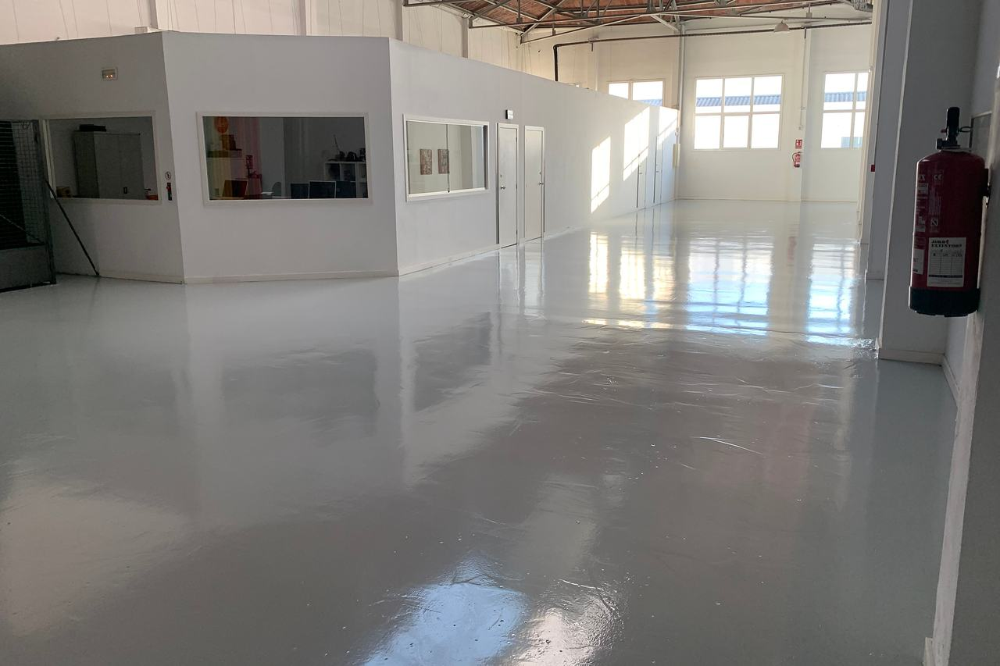

Microciment: avantatges i límits
Un terra sense juntes que puja per la paret i entra a la dutxa, sense obra d’enderroc. El microciment és preciós quan està ben fet i molt ingrat quan no ho està. Això és el que convé saber abans de decidir-se.

- És un revestiment de ciment i resines de 2 a 3 mil·límetres, aplicat a mà en diverses capes.
- Es pot posar damunt del terra o l’enrajolat existent, si són ferms.
- El punt feble és el suport: si a sota hi ha moviment o humitat, apareixen fissures.
- És artesanal: cada superfície té les seves aigües i matisos. No és uniforme com un porcellànic.
Què és el microciment
El microciment és un morter molt fi de ciment, àrids de gra petit, resines i pigments. S’estén amb llana en capes de molt poc gruix i, un cop segellat, forma un revestiment continu d’uns 2 o 3 mil·límetres en total. Es pot aplicar en terres, parets, escales, banys, cuines i mobles d’obra.
El seu gran atractiu és la continuïtat: el mateix material passa del terra a la paret i de la sala d’estar al bany sense talls, sense juntes i sense sòcols si no se’n volen. I com que és tan prim, es pot posar damunt del paviment existent sense aixecar-lo, sense recrèixer el terra i sense haver de retallar les portes.

No s’ha de confondre amb el formigó polit, que és una llosa de diversos centímetres que es poleix a la mateixa obra, ni amb els paviments de resina, que són plàstics i no tenen aquesta textura mineral. Cadascun té el seu lloc.
Com es fa, capa a capa
Un bon microciment no és «una capa de ciment fi». És un sistema de capes, cadascuna amb la seva funció, i gairebé tots els problemes apareixen quan se’n salta alguna:
Microciment fi
Dues mans de gra molt fi. Donen l’acabat, el tacte i les aigües característiques.
Microciment base
Dues mans de gra més gruixut. Donen cos i resistència.
Malla de fibra de vidre
Embeguda en la primera mà de base. Reparteix les tensions i ajuda a evitar fissures.
Imprimació
Específica per a cada suport: ceràmica, ciment, guix o pladur. Assegura l’adherència.
Suport existent
Rajola, solera de ciment, paret de guix o placa. Ha d’estar ferm, sec i sense moviment.
Entre capa i capa cal deixar assecar i polir amb paper de vidre. Per això, encara que el material és prim, un microciment porta uns quants dies de feina, i el vernís necessita temps per curar del tot abans de rebre un ús intens. En banys i dutxes, a més, abans s’aplica una làmina impermeabilitzant: el microciment segellat repel·leix l’aigua, però no és una impermeabilització per si sol.
Els avantatges reals
- Sense enderrocs. S’aplica sobre el terra o l’enrajolat existents si estan ben adherits. Menys runa, menys pols i menys dies d’obra que aixecar-ho i tornar-ho a col·locar.
- Continuïtat. Sense juntes on s’acumuli la brutícia. Visualment amplia els espais, sobretot en pisos petits.
- Poc gruix. Dos o tres mil·límetres: no cal retallar portes ni canviar nivells.
- Versatilitat. Terres, parets, plats de dutxa d’obra, taulells, escales. El mateix acabat a tot arreu.
- Compatible amb terra radiant, sempre que la instal·lació estigui provada i es respectin els temps d’arrencada de la calefacció.
- Aspecte propi. Les aigües, el tacte mineral i els matisos d’una feina feta a mà, impossibles d’imitar amb una peça industrial.


Els límits (els que gairebé ningú no explica)
Res d’això el descarta, però convé saber-ho abans de triar:
- Fissures. És un material rígid de pocs mil·límetres. Si el suport es mou —un forjat de fusta que fa fletxa, una rajola buida, una junta estructural tapada—, el microciment ho copia i es fissura. La malla i una bona imprimació ajuden, però no fan miracles sobre un suport inestable.
- Taques. La seva protecció és el vernís. Si el vernís es desgasta o es ratlla, el vi, l’oli o el cafè hi poden penetrar. Els productes àcids o molt agressius també l’ataquen.
- Ratllades i cops. Les potes de les cadires sense protector, la sorra del carrer o un objecte que cau poden marcar el vernís o escrostonar una aresta.
- No és uniforme. És el seu encant, però cal saber-ho: no en sortirà un gris perfectament llis com una rajola. Si busques una superfície idèntica d’un extrem a l’altre, un microciment et decebrà.
- Depèn molt de qui l’aplica. El mateix producte dona resultats molt diferents segons la mà. Demana de veure feines anteriors.
- Les reparacions es noten. Es poden fer, però és difícil que un pedaç quedi invisible.
Quan no el posaríem
Hi ha situacions en què preferim recomanar una altra cosa, o resoldre abans el problema de base:
Suports amb moviment: forjats de fusta sense rigiditzar, rajoles que sonen a buit en molts punts o soleres amb fissures actives.
Humitat que puja del terreny en plantes baixes sense aïllar: el vapor empeny des de sota i aixeca el revestiment.
Ús molt dur: garatges, tallers o zones de càrrega. Aquí és millor un paviment de resina pensat per a aquest trànsit.
Exteriors molt exposats: hi ha sistemes per a exterior, però els canvis de temperatura, el sol i la glaçada el castiguen més. Cal triar bé el producte i assumir més manteniment.
Quan es busca una uniformitat total o un terra que no necessiti cap cura.
Com cuidar-lo perquè duri
Un microciment ben fet i ben cuidat dura molts anys. El que demana és poc, però constant:
- Netejar amb aigua i sabó neutre. Res de lleixiu, amoníac, àcids ni fregalls abrasius.
- Posar feltres a les potes de cadires i mobles, i una estora a l’entrada per a la sorra.
- Eixugar de seguida els vessaments de vi, oli, cafè o productes de neteja forts.
- A les zones de molt de pas, renovar el vernís quan es vegi apagat o desgastat. És molt més fàcil i barat que reparar un microciment que ha perdut la protecció.
Si vols veure com ho plantegem en terres, banys i parets, ho expliquem a microciment en interiors.
El que més ens pregunten
Es pot posar microciment sobre rajoles?
Sí, si les rajoles estan ben enganxades i no sonen a buit. Es netegen a fons, s’aplica una imprimació específica per a ceràmica i es reomplen les juntes perquè no es marquin. Les peces soltes es retiren i se’n reomple el buit abans de començar.
El microciment rellisca?
Depèn de l’acabat. Amb un vernís llis i brillant i el terra mullat pot relliscar. En banys, dutxes i zones humides es fa servir un vernís amb additiu antilliscant o un acabat amb una mica de textura.
Es pot posar en una dutxa?
Sí, però amb una impermeabilització a sota i un segellat específic per a zones amb aigua. El microciment per si sol no és una impermeabilització: el que protegeix és el sistema complet, incloses les trobades amb el plat, les aixetes i els desguassos.
Quants dies dura l’obra?
Depèn dels metres i de l’estat del suport, però compta amb uns quants dies: entre capa i capa cal esperar que s’assequi i polir-la, i el vernís necessita temps abans de rebre un ús normal. Un bany complet o el terra d’un pis petit solen ser qüestió de dies, no d’hores.
Amb el temps hi surten fissures?
Sobre un suport ferm, ben imprimat i amb malla, no n’hi hauria de sortir. Les fissures gairebé sempre vénen del que hi ha a sota: rajoles buides, forjats que es mouen o juntes estructurals que es van tapar. Per això el primer és revisar bé el suport.
L’ha escrit l’equip tècnic de Lamper Soluciones de Acabado. És una guia general: cada sistema de microciment té les seves pròpies capes, temps i productes, que marca el fabricant. Revisat l’octubre del 2026.
Penses en el microciment?
Envia’ns fotos del terra o de les parets que vols revestir i digues-nos els metres. Et direm si el suport ho aguanta i què caldria fer abans.